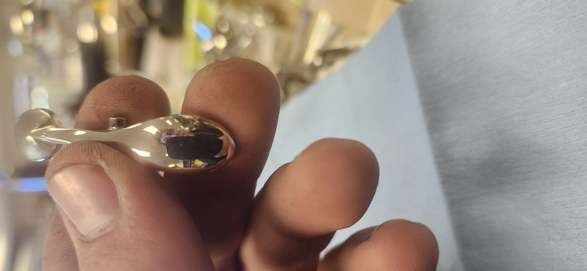
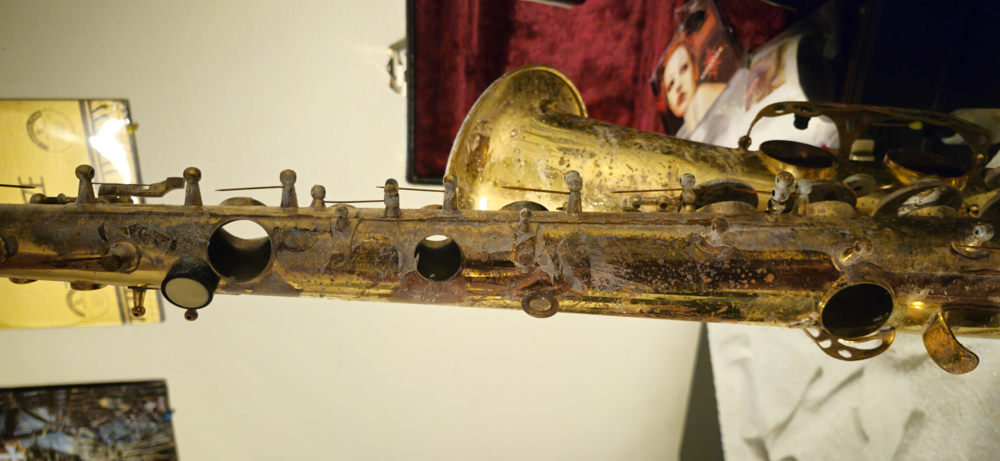
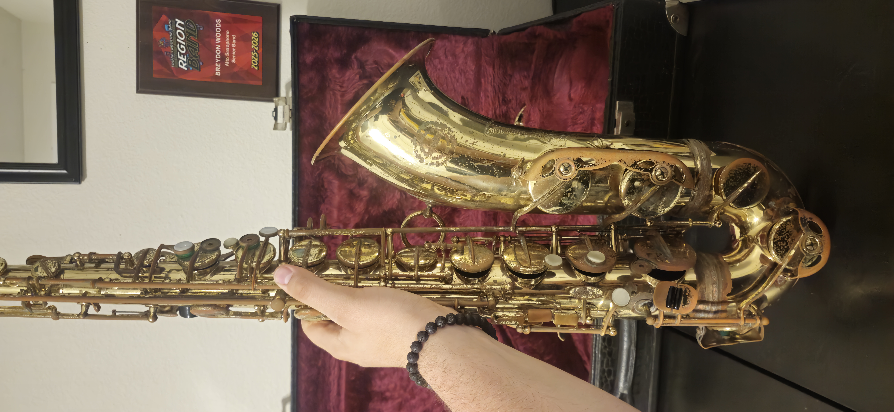

Blog Entries
Thursday November 5, 2026

Today I made and solderd a brass bar onto my trumpet bell. I think soldering is the most fun I have ever had. I love the result and I cannot wait to solder some more.
Tuesday September 22, 2026

Today I buffed the keys of my project clarinet. I'm very proud of the result because it's a mirror finish! This was one of my first expiriances at the buffing machine and I could not have had more fun. I especially liked working with different compunds to see what worked best. Here's to the rest of the project going well!
Wednesday July 22, 2026

This Saxophone has now officialy survived 2 moves, several boiling baths and I cannot wait to buff it and make it look super nice. This might be my favorite project ever!
Wednesday April 8, 2026
Today I stripped the laquer off my tenor saxophone using Easy Off oven spray. Let me tell you I have quite the headache but... oh well
Sunday April 5, 2026

This is my new project saxophone. I don't know quite yet what I want to do with it... However It could make for a good vintage horn!